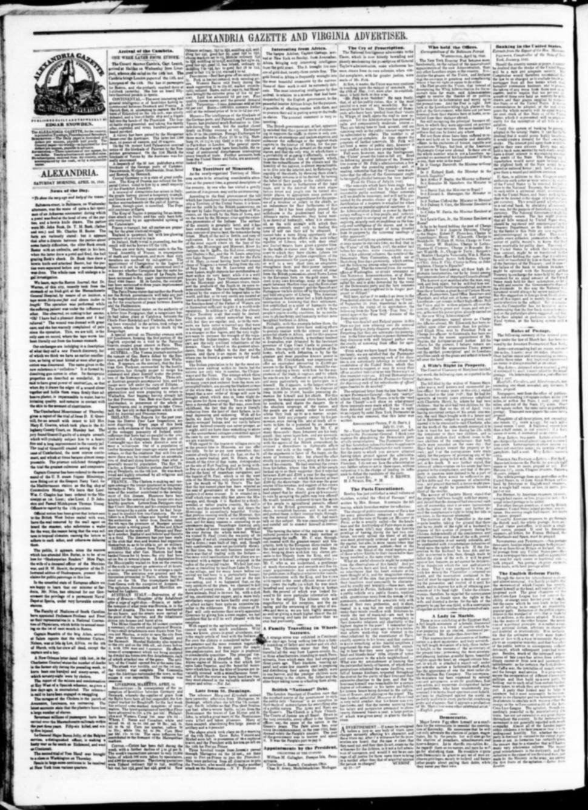
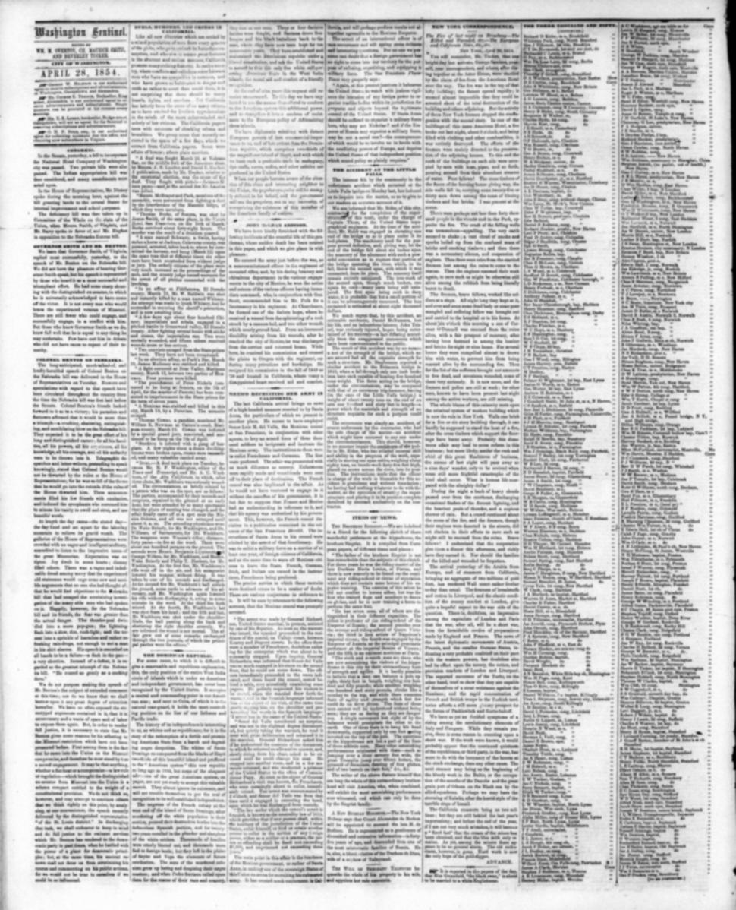

A Republic Looking for RecognitionUna república en busca de reconocimiento
The eraLa era
The War That Kept RestartingLa guerra que volvía a empezar
American coverage of the young Dominican Republic mixed genuine sympathy with calculation.
La cobertura estadounidense de la joven República Dominicana mezcló simpatía genuina con cálculo.
Read the full sectionLeer la sección completa
Recognition, Asked and DeferredReconocimiento, pedido y aplazado
Recognition was the era's open question. The United States sent a commercial agent early: F. C. Harrison's appointment came in 1847, and as early as 1845 a Mr. Hogan had been sent to investigate the republic's resources after a petition for acknowledgment, returning with a satisfactory account. England moved faster: by 1850 Dominicans were celebrating a treaty acknowledging their independence. But Washington's formal recognition was slow, and the delay itself became news: in 1854 the Washington Sentinel was still editorializing that after nine years the request for the moral aid of friendly recognition remained unanswered.
El reconocimiento era la pregunta abierta de la era. Estados Unidos envió temprano un agente comercial: el nombramiento de F. C. Harrison llegó en 1847, y ya en 1845 un señor Hogan había sido enviado a investigar los recursos de la república tras una petición de reconocimiento, y volvió con un informe satisfactorio. Inglaterra se movió más rápido: para 1850 los dominicanos celebraban un tratado que reconocía su independencia. Pero el reconocimiento formal de Washington tardó, y la propia demora se hizo noticia: en 1854 el Washington Sentinel seguía editorializando que, tras nueve años, la petición dominicana de la ayuda moral de un reconocimiento amistoso seguía sin respuesta.
Samaná and the Price of a BaySamaná y el precio de una bahía
Every delay invited new schemes: French claims to Samaná, rumors the bay had been ceded, annexation argued as one of three choices before American diplomacy. The bay itself was surveyed for American readers as a prize, the key to the Caribbean.
Cada demora invitaba a nuevos planes: reclamos franceses sobre Samaná bajo un tratado anterior, rumores de que la bahía había sido cedida, la anexión discutida como una de tres opciones ante la diplomacia estadounidense. La propia bahía era descrita para los lectores estadounidenses como un premio, la llave del Caribe.
Survival at HomeSupervivencia en casa
For Dominicans these were years of survival: repeated invasions beaten back, and governments asking the world to treat independence as a fact rather than a pause between occupations. Survival was contested at home too: in 1857 and 1858 Santana and Báez fought a civil war, Báez confined to the capital, his soldiers deserting, a new constitution drafted at Moca. The period's lesson is double: the country was being taken seriously abroad for the first time, and it was already being priced.
Para los dominicanos, fueron años de supervivencia: invasiones repetidas rechazadas, y gobiernos que pedían al mundo tratar la independencia como un hecho y no como una pausa entre ocupaciones. La supervivencia también se disputaba en casa: en 1857 y 1858 Santana y Báez pelearon una guerra civil, con Báez confinado en la capital, sus soldados desertando y una nueva constitución redactada en Moca. La lección del período es doble: el país era tomado en serio en el extranjero por primera vez, y ya estaba siendo tasado.
PlatesLáminas

Late from St. Domingo.

The Dominican Republic.
A Visit to the Island.
Key articlesArtículos clave
Late from St. Domingo.Noticias recientes de Santo Domingo.
President Soulouque captured the Dominican towns of Las Matas and St. John following a severe battle on March 18, resulting in numerous Dominican casualties, prisoners, and abandoned artillery. Generals Bobo, Vincent, and Michel were left in possession of the captured towns while the President departed for Port-au-Prince on March 19. Additionally, troops and men were gathering from various directions to join the President in preparation for another anticipated attack on the Dominicans.
A partir del fragmento publicado, el presidente Soulouque se apoderó de las villas dominicanas de Las Matas y San Juan tras un reñido combate librado el 18 de marzo, saldado con copiosas bajas, prisioneros y trenes de artillería abandonados por los dominicanos. Los generales Bobo, Vincent y Michel quedaron al mando de las poblaciones ocupadas, al tiempo que el gobernante salía rumbo a Puerto Príncipe el 19 de marzo. Entretanto, contingentes y reclutas confluían desde distintos puntos para incorporarse a las fuerzas presidenciales ante la previsión de una nueva ofensiva contra los dominicanos.
The Dominican Republic.La República Dominicana.
Recounting twenty-two years of Haitian rule over the Spanish portion of the island of Santo Domingo, the paper states that the sons of the colonists in the plains of Seybo and Vega rose under Pedro Santana, fought three or four decisive battles, and drove Soulouque and his forces back to the west, where they have been kept for ten consecutive years. Having maintained the Dominican Republic under a liberal constitution, the Dominicans ask the United States for the moral aid of friendly recognition as what the paper calls the only free white self-governing American state in the West Indies. The editorial laments that after nine years this request remains unanswered, neglecting an opportunity to bring the republic into the American system as a center of resistance to the European policy of "Africanizing" the islands.
Un editorial del Washington Sentinel critica la negativa de los Estados Unidos a reconocer la independencia de la República Dominicana. Al relatar veintidós años de dominio haitiano sobre la parte española de la isla de Santo Domingo, el periódico afirma que los hijos de los colonos en las llanuras de El Seibo y La Vega se levantaron bajo el mando de Pedro Santana, libraron tres o cuatro batallas decisivas y rechazaron a Soulouque y sus fuerzas hacia el oeste, donde han sido contenidos durante diez años consecutivos. Habiendo mantenido la República Dominicana bajo una constitución liberal, los dominicanos solicitan a los Estados Unidos el apoyo moral de un reconocimiento amistoso para lo que el diario denomina el único Estado americano libre, blanco y autónomo en las Antillas. El editorial lamenta que, al cabo de nueve años, esta solicitud siga sin respuesta, desaprovechando la oportunidad de integrar la república al sistema americano como núcleo de resistencia frente a la política europea de «africanizar» las islas.
A Visit to the Island.Una visita a la isla.
It says the account ended with a truce said to be consolidating into peace.
El periódico ofrece un relato dramático y con marco racial propio de la época sobre un ataque a un pueblo dominicano por una partida liderada por uno de los capitanes de Soulouque después de que Santana izara la bandera de la independencia dominicana, y sobre jinetes locales que reunieron a los residentes para una lucha cuerpo a cuerpo. Dice que el relato terminaba con una tregua que se consolidaba en paz.
ErasEras · The era's articlesLos artículos de la era · On the timelineEn la cronología